ggpointless is an extension of the ggplot2 package providing additional layers. These layers group into two categories:
Data transformations — geoms that fit or transform data:
-
geom_arch()&stat_arch()– draws a catenary arch -
geom_catenary()&stat_catenary()– draws a catenary curve -
geom_chaikin()&stat_chaikin()– smooths paths using Chaikin’s corner cutting algorithm -
geom_fourier()&stat_fourier()– fits a Fourier series tox/yobservations -
geom_gridline()– gridlines as a layer (drawn above other geoms) -
geom_lexis()&stat_lexis()– draws a Lexis diagram -
geom_pointless()&stat_pointless()– emphasises selected observations with points
Visual effects — purely aesthetic layers that change how data looks without transforming it. The following layers are mostly drop-in replacements for their ggplot2 counterparts. They add visual flair like alpha gradients but no statistical transformation:
-
geom_abline_fade()/geom_hline_fade()/geom_vline_fade() geom_area_fade()-
geom_col_fade()/geom_bar_fade() geom_density_fade()geom_freqpoly_fade()geom_histogram_fade()-
geom_path_fade()/geom_line_fade()/geom_step_fade() geom_point_glow()geom_rect_fade()-
geom_ridgeline_fade()/geom_ridgeline_density_fade()/geom_ridgeline_freqpoly_fade()/geom_ridgeline_histogram_fade() -
geom_segment_fade()/geom_curve_fade() -
geom_unit_bar()/geom_unit_col()– isotype / unit bar charts -
geom_unit_histogram()– isotype / unit histogram
See the Examples article for more examples.
Installation
ggpointless requires R ≥ 4.2 and ggplot2 ≥ 4.0.0. You can install it from CRAN with:
install.packages("ggpointless")Usage
The chunk below sets a colour palette so the README plots share a consistent look. It’s not required; only the look of your plots will differ.
library(ggplot2)
library(ggpointless)
# Brand palette -- kept in sync with the vignette
cols <- c("#311dfc", "#a84dbd", "#d77e7b", "#f4ae1b")
theme_set(
theme_minimal() +
theme(
legend.position = "bottom",
geom = element_geom(fill = cols[1]),
palette.fill.discrete = cols,
palette.colour.discrete = cols,
palette.fill.continuous = cols,
palette.colour.continuous = cols
)
)Statistical transformations
Catenary curves and arches
set.seed(5)
df_catenary <- data.frame(x = 1:4, y = sample(4))
ggplot(df_catenary, aes(x, y)) +
geom_catenary() +
geom_point(size = 3)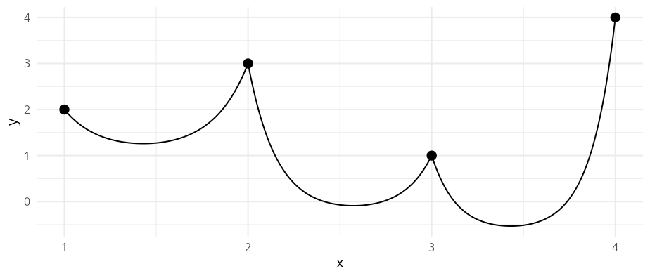
ggplot(df_catenary, aes(x, y)) +
geom_catenary(
sag = c(2, .5, NA),
chain_length = c(NA, 4, 6)) +
geom_point(size = 3)
#> Both `sag` and `chain_length` supplied for 1 segment; using `sag`.
#> This message is displayed once every 8 hours.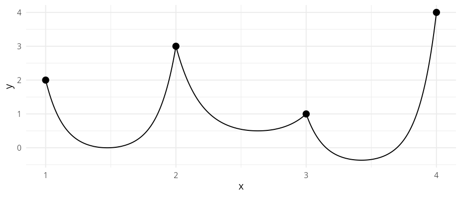
ggplot(df_catenary, aes(x, y)) +
geom_arch(
arch_height = c(1.5, NA, 0.5),
arch_length = c(NA, 6, NA)
) +
geom_point(size = 3)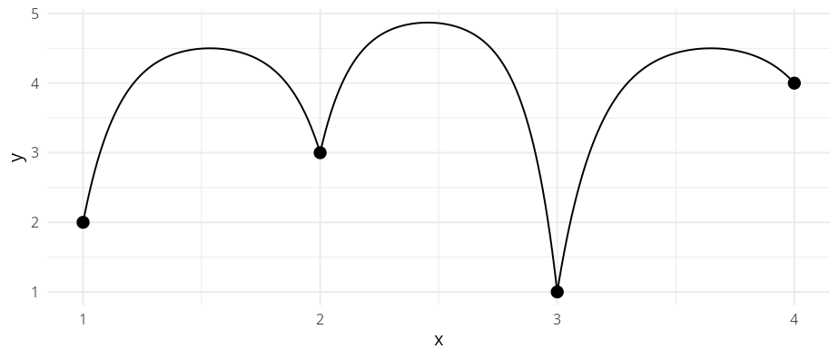
Chaikin’s corner cutting algorithm
lst <- list(
data = list(
whale = data.frame(x = c(.5, 4, 4, 3.5, 2), y = c(.5, 1, 1.5, .5, 3)),
closed_square = data.frame(x = c(0, 0, 1, 1), y = c(2, 3, 3, 2)),
open_triangle = data.frame(x = c(3, 3, 5), y = c(2, 3, 3)),
closed_triangle = data.frame(x = c(3.5, 5, 5), y = c(0, 0, 1.5))
),
color = cols,
mode = c("closed", "closed", "open", "closed")
)
ggplot(mapping = aes(x, y)) +
lapply(lst$data, \(i) {
geom_polygon(data = i, fill = NA, linetype = "12", color = "#333333")
}) +
Map(f = \(data, color, mode) {
geom_chaikin(data = data, color = color, mode = mode)
}, data = lst$data, color = lst$color, mode = lst$mode) +
geom_point(data = data.frame(x = 1.5, y = 1.5)) +
coord_equal()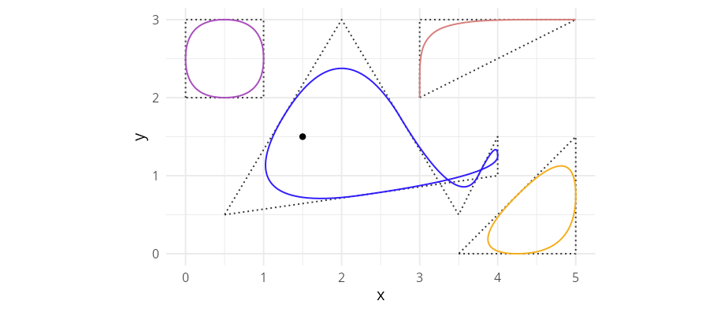
Discrete Fourier transform
x_d <- seq(0, 4 * pi, length.out = 15)
df_d <- data.frame(
x = x_d,
y = sin(x_d) + x_d * 0.4 + rnorm(15, sd = 0.2)
)
p <- ggplot(df_d, aes(x, y)) +
geom_point(alpha = 0.35)
p + geom_fourier()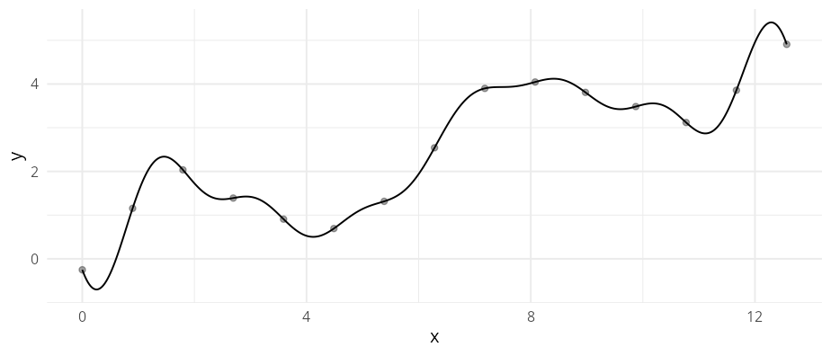
p +
geom_fourier(
aes(colour = "detrend = NULL"),
n_harmonics = 3
) +
geom_fourier(
aes(colour = "detrend = \"lm\""),
n_harmonics = 3,
detrend = "lm"
)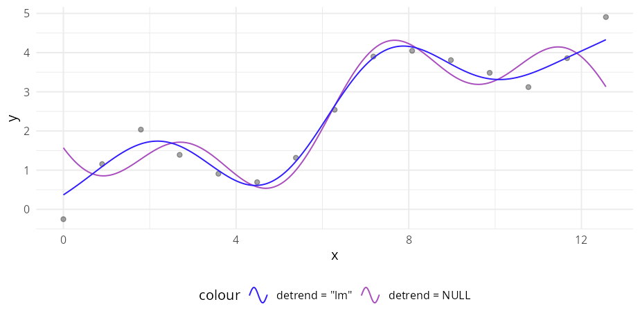
Draw (grid)lines above bars and other geoms
ggplot(mpg, aes(class)) +
geom_bar() +
geom_gridline()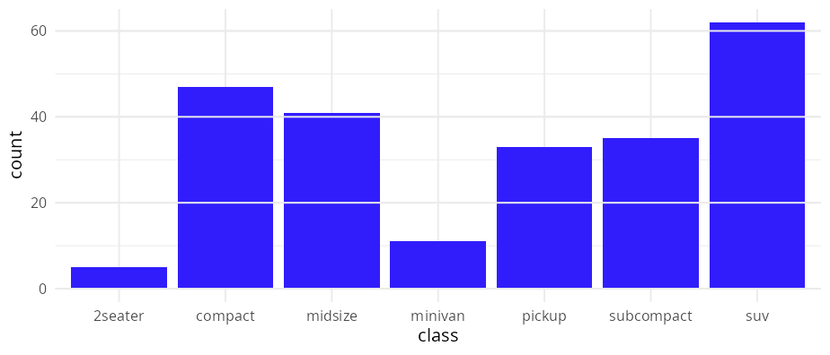
p <- ggplot(mpg, aes(y = class)) +
geom_bar() +
geom_gridline(grids = "x")
# geom_gridline inherits its line properties from theme
p + theme(panel.grid = element_line(colour = "white"))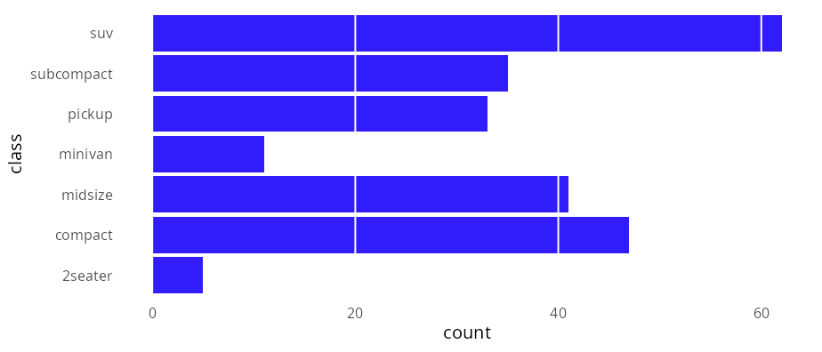
# The x/y positions are deducted from the scale(s)
p + scale_x_sqrt()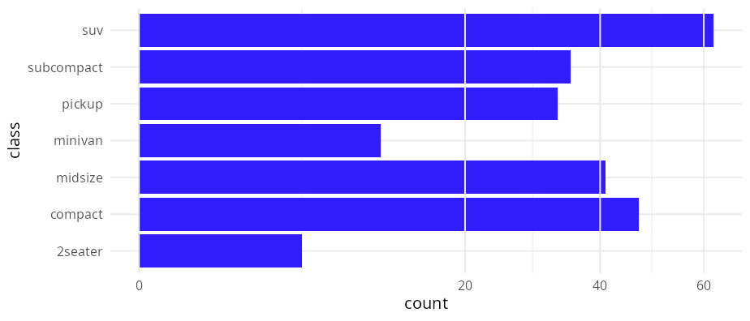
# You can overwrite these properties of course
p +
geom_gridline(grids = "x", colour = cols[4], linewidth = 1.5) +
scale_x_sqrt(breaks = c(10, 20, 30, 40, 50))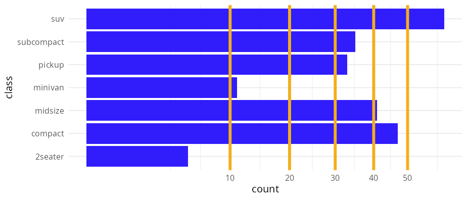
Lexis diagrams
df_lexis <- data.frame(
key = c("A", "B", "B", "C", "D"),
x = c(0, 1, 6, 5, 6),
xend = c(5, 4, 10, 8, 10)
)
ggplot(df_lexis, aes(x = x, xend = xend, color = key)) +
geom_lexis(aes(linetype = after_stat(type)), size = 2) +
coord_equal() +
scale_x_continuous(breaks = c(df_lexis$x, df_lexis$xend)) +
scale_linetype_identity() +
theme(panel.grid.minor = element_blank())
Emphasise some observations
sunspot_df <- data.frame(
year = time(datasets::sunspot.year),
sunspots = unclass(datasets::sunspot.year)
)
ggplot(tail(sunspot_df, 12), aes(year, sunspots)) +
geom_step(colour = cols[4]) +
geom_pointless(location = c("first", "last"), size = 3, colour = cols[4])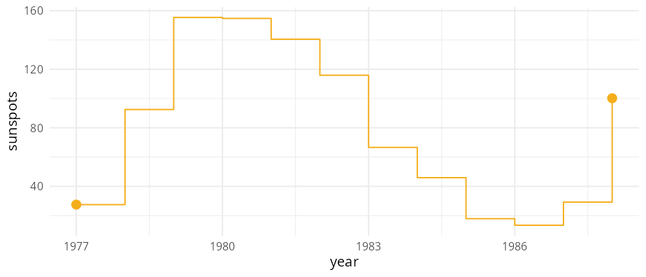
Visual effects
Fading area, density, and ridgeline charts
set.seed(42)
df_fade <- data.frame(
x = seq_len(60),
y = cumsum(rnorm(60, sd = 0.35))
)
p <- ggplot(df_fade, aes(x, y))
p + geom_area_fade()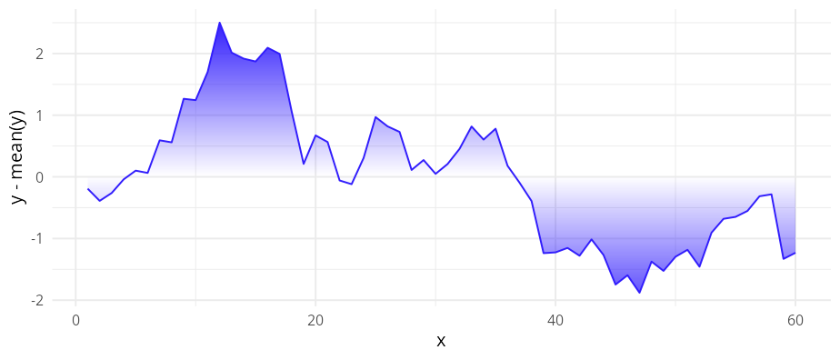
ggplot(iris, aes(Sepal.Length)) +
geom_freqpoly_fade(alpha = 0, alpha_fade_to = 1)
#> `stat_bin()` using `bins = 30`. Pick better value `binwidth`.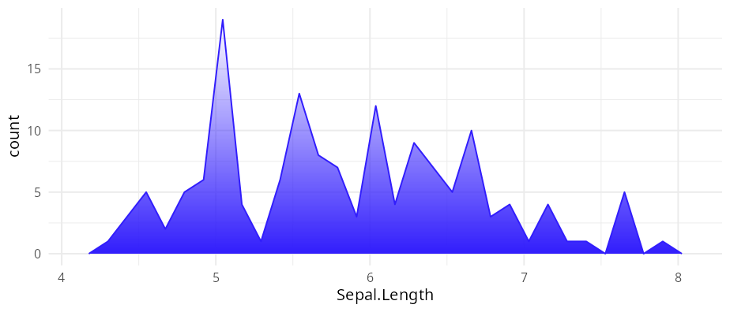
dmn <- list(
month.abb,
time(datasets::nottem) |> floor() |> unique()
)
df_nottem <- datasets::nottem |>
matrix(data = _, 12, dimnames = dmn) |>
as.data.frame() |>
stack() |>
cbind(month = factor(month.abb, levels = month.abb))
p <- ggplot(df_nottem, aes(x = values, group = month, fill = after_stat(x))) +
labs(
x = NULL,
y = NULL,
caption = "Average air temperatures at Nottingham Castle in degrees Fahrenheit (1920–1939)"
) +
guides(fill = "none") +
scale_x_continuous(expand = 0)
p + geom_density_fade(
outline.type = "none"
)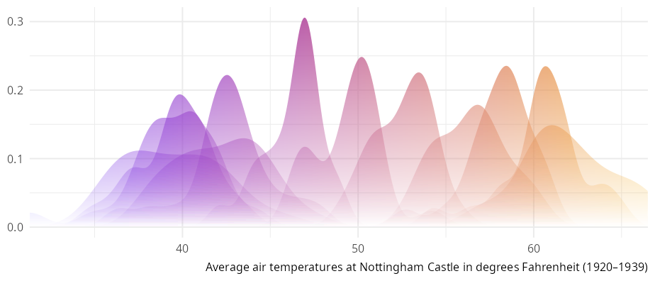
p <- p + aes(y = month)
p + geom_ridgeline_density_fade(
alpha_scope = "global",
outline.type = "none"
)
#> ℹ Using auto-computed `scale = 6.5`.
#> • Pass an explicit `scale` to override.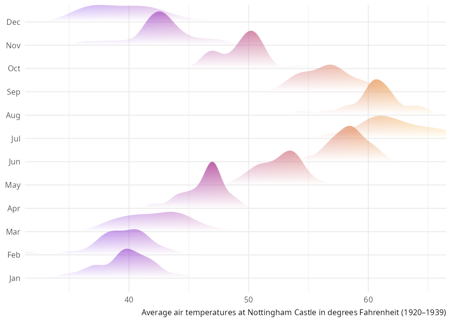
p + geom_ridgeline_freqpoly_fade(
alpha_scope = "global",
linewidth = 0.25
)
#> ℹ Using auto-computed `scale = 0.2`.
#> • Pass an explicit `scale` to override.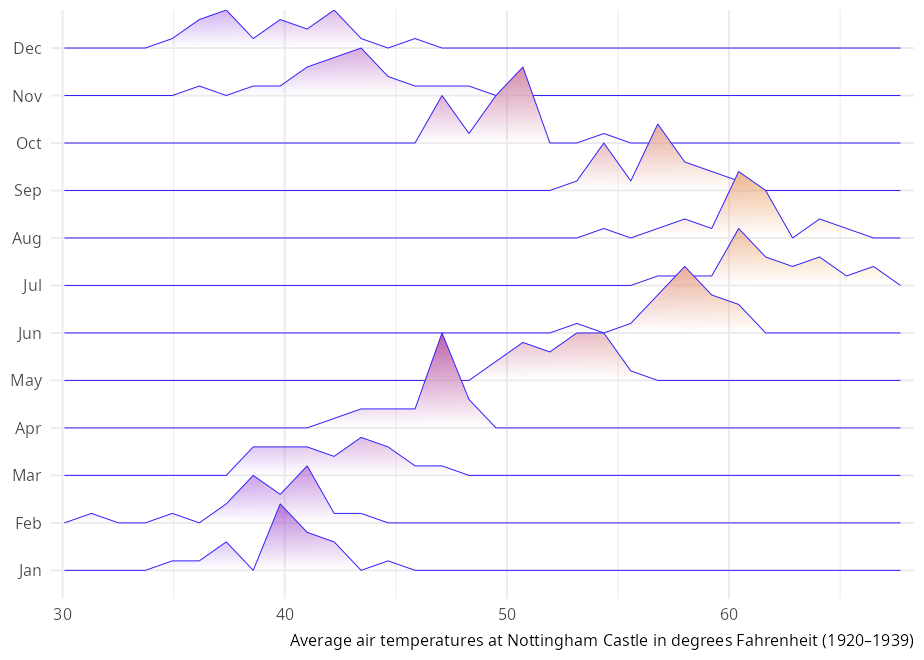
p + geom_ridgeline_histogram_fade(
alpha_scope = "group",
bins = 40,
linewidth = 0.25
)
#> ℹ Using auto-computed `scale = 0.29`.
#> • Pass an explicit `scale` to override.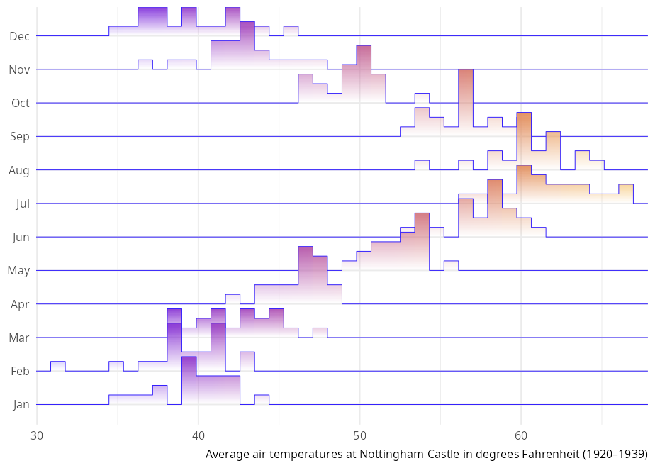
Points that glow
anscombe_long <- reshape(anscombe, varying = TRUE, sep = "", direction = "long", timevar = "tv")
ggplot(anscombe_long, aes(x, y)) +
geom_point_glow(colour = cols[1]) +
facet_wrap(~tv) +
coord_equal(clip = "off") 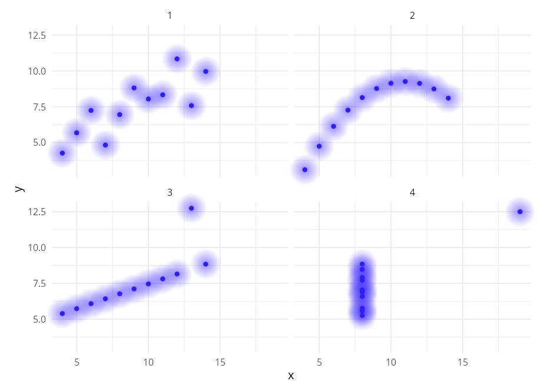
Fading curves, lines, and paths
b <- ggplot(mtcars, aes(wt, mpg)) +
geom_point()
df <- data.frame(x1 = 2.62, x2 = 3.57, y1 = 21.0, y2 = 15.0)
b +
geom_curve_fade(
aes(x = x1, y = y1, xend = x2, yend = y2, colour = "curve"),
arrow = arrow(),
data = df
) +
geom_segment_fade(
aes(x = x1, y = y1, xend = x2, yend = y2, colour = "segment"),
data = df
)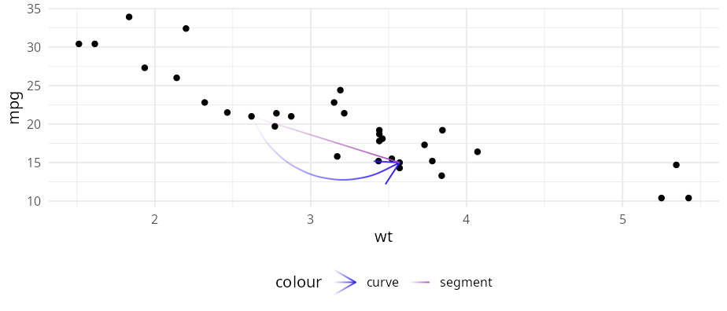
theta <- seq(1.3, -1.3, length.out = 101)
ichthys <- data.frame(
x = theta^2,
y = 0.5 * theta * (theta^2 - 1)
)
ggplot(ichthys, aes(x, y)) +
geom_path_fade(
linewidth = 1.5,
fade_direction = c("start", "end"),
alpha_mode = "gradient"
) +
coord_fixed()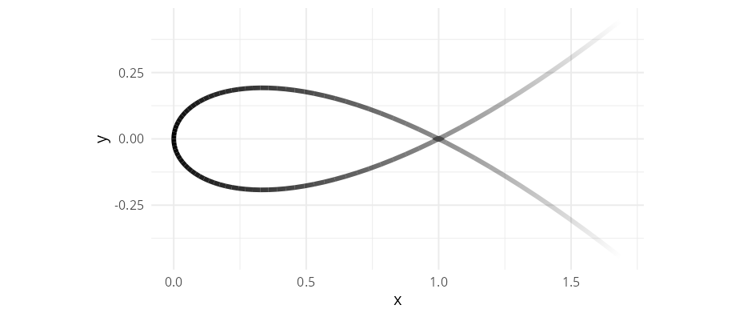
p <- ggplot() +
geom_abline_fade(intercept = 0, colour = "#a84dbd", linewidth = 1) +
geom_hline_fade(yintercept = 1, colour = "#d77e7b", linewidth = 1) +
geom_vline_fade(xintercept = 1, colour = "#f4ae1b", linewidth = 1) +
xlim(0, 2) +
ylim(0, 2)
p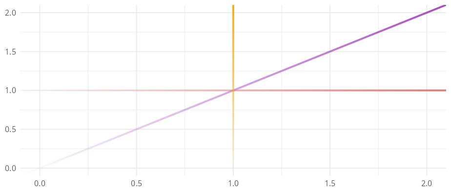
p + coord_polar()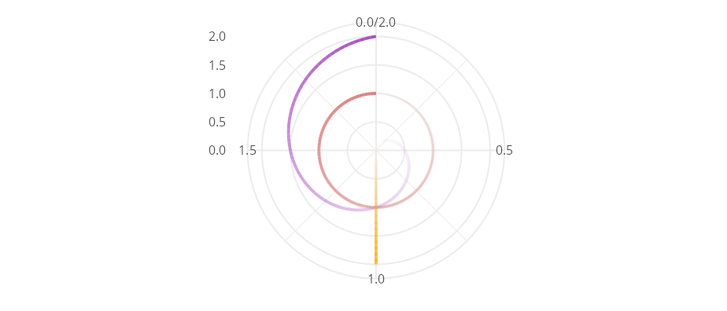
ggplot() +
stat_function(
alpha = 0.5,
fun = dnorm,
n = 100,
xlim = c(-4, 4),
geom = "area_fade",
outline.type = "none" # remove solid outline
) +
# Add fading outline instead
stat_function(
fun = dnorm, n = 100,
xlim = c(-4, 4),
geom = "line_fade",
colour = cols[1],
linewidth = 1,
fade_direction = c("start", "end")
)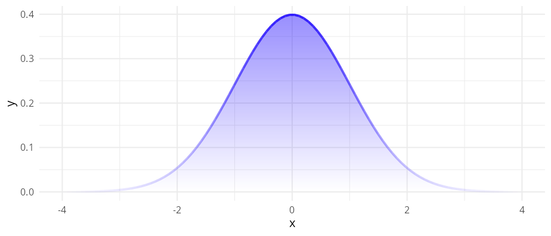
ggplot(head(economics, 25), aes(date, unemploy)) +
geom_step_fade(alpha_fade_to = 0.1)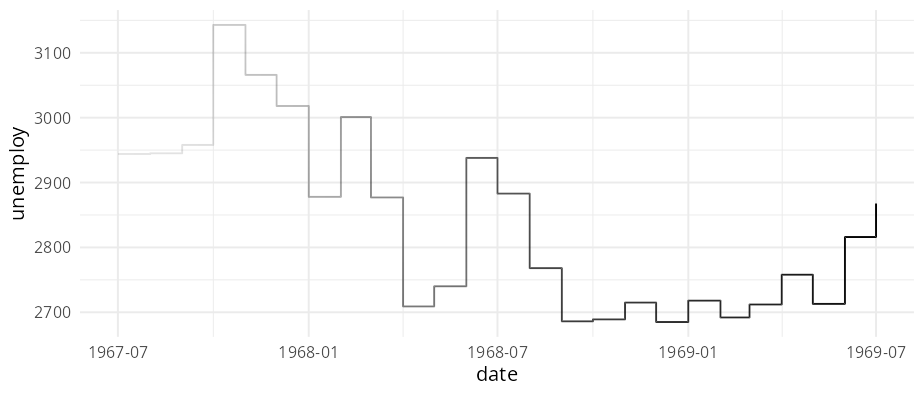
Fading rectangles and bar charts with rounded corners
ggplot(head(economics, 25), aes(date, unemploy)) +
geom_rect_fade(
data = data.frame(
xmin = as.Date("1968-07-01"),
xmax = as.Date("1969-07-01"),
ymin = -Inf, ymax = 2800
),
inherit.aes = FALSE,
alpha = 0,
alpha_fade_to = 0.3,
aes(xmin = xmin, xmax = xmax, ymin = ymin, ymax = ymax)
) +
geom_step_fade(alpha_fade_to = 0.1)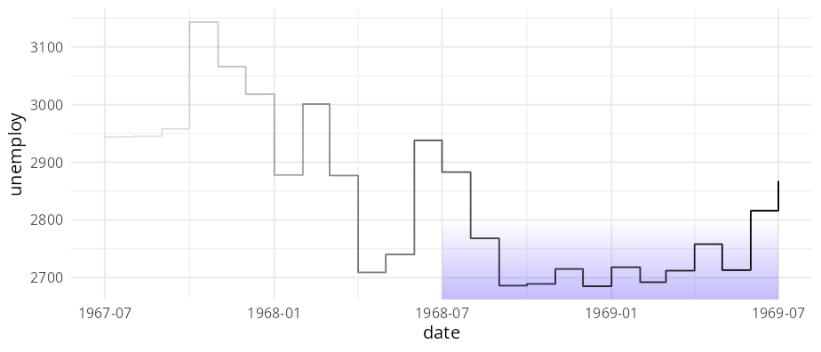
ggplot(mpg, aes(y = class)) +
geom_bar_fade()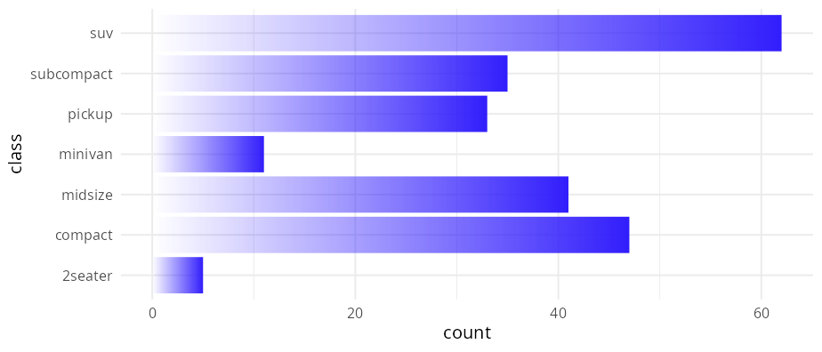
ggplot(datasets::BOD, aes(Time, demand)) +
geom_col_fade(
radius = unit(10, "pt"),
alpha = 0.75,
alpha_fade_to = 0.25,
alpha_scope = "global"
)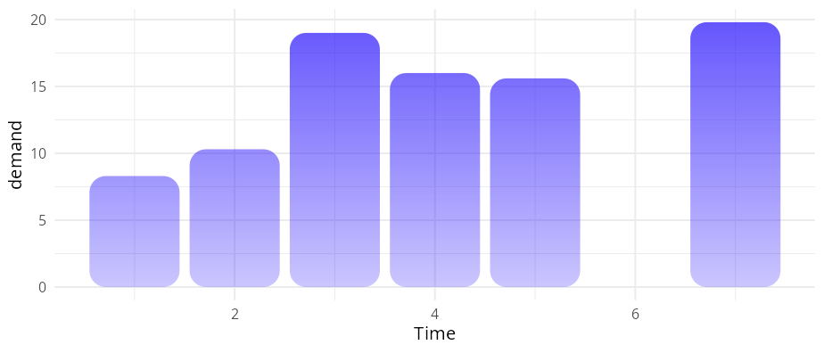
ggplot(faithful, aes(eruptions)) +
geom_histogram_fade(
alpha = 0.8,
alpha_fade_to = 0.1,
alpha_scope = "global"
) +
geom_step(
stat = "bin",
direction = "mid",
colour = cols[1]
)
#> `stat_bin()` using `bins = 30`. Pick better value `binwidth`.
#> `stat_bin()` using `bins = 30`. Pick better value `binwidth`.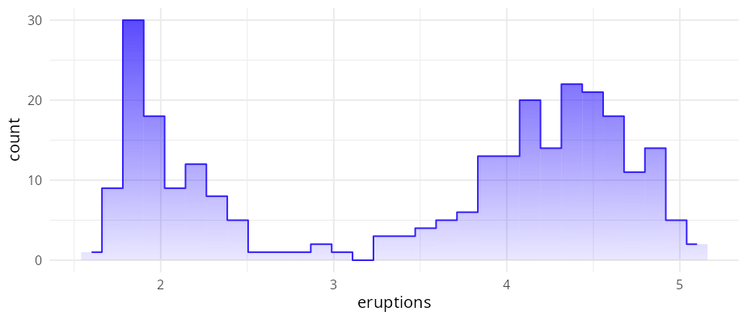
### Unit bar charts and histograms
bins <- 30
bw <- diff(range(faithful$eruptions)) / bins
ggplot(faithful, aes(eruptions)) +
geom_unit_histogram(
aes(fill = after_stat(x)),
radius = unit(1, "pt"),
bins = bins
) +
labs(
y = NULL
) +
guides(fill = "none") +
scale_x_continuous(
breaks = 2:5,
labels = paste(2:5, "min")
) +
coord_equal(ratio = 1/3 * bw, clip = "off") +
theme(
panel.grid.minor = element_blank(),
panel.grid.major.x = element_blank(),
axis.ticks = element_blank()
)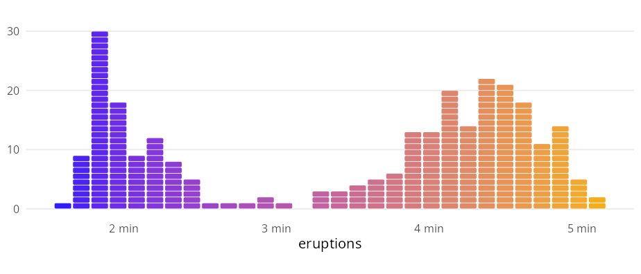
cs <- 100
ggplot(diamonds, aes(y = cut, fill = color)) +
geom_unit_bar(
cell_size = cs,
radius = unit(1, "pt"),
position = "dodge"
) +
labs(
x = NULL,
y = NULL,
caption = sprintf("One cell equals %d observations.", cs)) +
coord_equal(ratio = 7 * cs) +
theme_minimal()
#> ! `radius` of 1 pt exceeds the largest displayable corner radius for the
#> rendered shape.
#> ℹ Maximum displayable radius is 0.52 pt; falling back to that.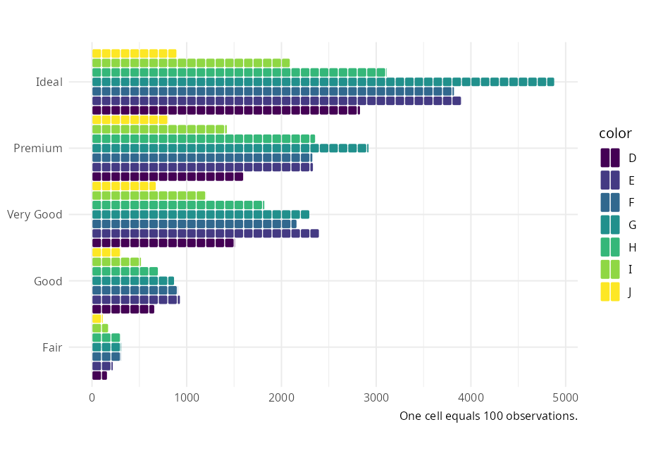
The geom_unit_* family was inspired by the work of pudding.cool.
Accessibility
Visual effects can quietly exclude readers. The faded end of any gradient geom drops below WCAG contrast thresholds for low-vision readers. Pair colour with linetype, shape, or labels for categorical encodings; prefer colour-vision-deficiency-safe (CVD-safe) palettes like scale_colour_viridis_d() or Okabe–Ito; and raise alpha_fade_to when the faded region carries data your readers need to find.
The 4-stop palette cols used in this README and the Examples article is monotonic in luminance, so it survives greyscale conversion and the stop ordering is preserved under CVD. The middle hues collapse under deuteranopia, however, so for cases where hue identity carries information rather than ordering, prefer scale_fill_viridis_c() / scale_colour_viridis_c().
Device compatibility
The 2D gradients used by geom_area_fade() and friends depend on Porter-Duff compositing1, a feature of R’s graphics engine added in R 4.2. When the active device does not support compositing (e.g. grDevices::pdf()), the fade family falls back to a single-colour vertical fade — the horizontal colour gradient is lost, only the vertical alpha fade survives, and a one-time message is emitted:
!
geom_area_fade(): the graphics device does not support gradient fills. Thefillcolour gradient is replaced by a single colour. Switch to a device that supports gradients (e.g.ragg::agg_png(),svg(),cairo_pdf()) for the full effect. This message is displayed once per session.
Most modern raster devices — including ragg::agg_png() and the Cairo-backed png() shipped on Linux and macOS — do support compositing, so the 2D gradient works out of the box. In RStudio, go to Tools > Global Options > Graphics > Backend and select AGG to ensure full support.
Code of Conduct
Please note that this project is released with a Contributor Code of Conduct. By participating in this project you agree to abide by its terms.